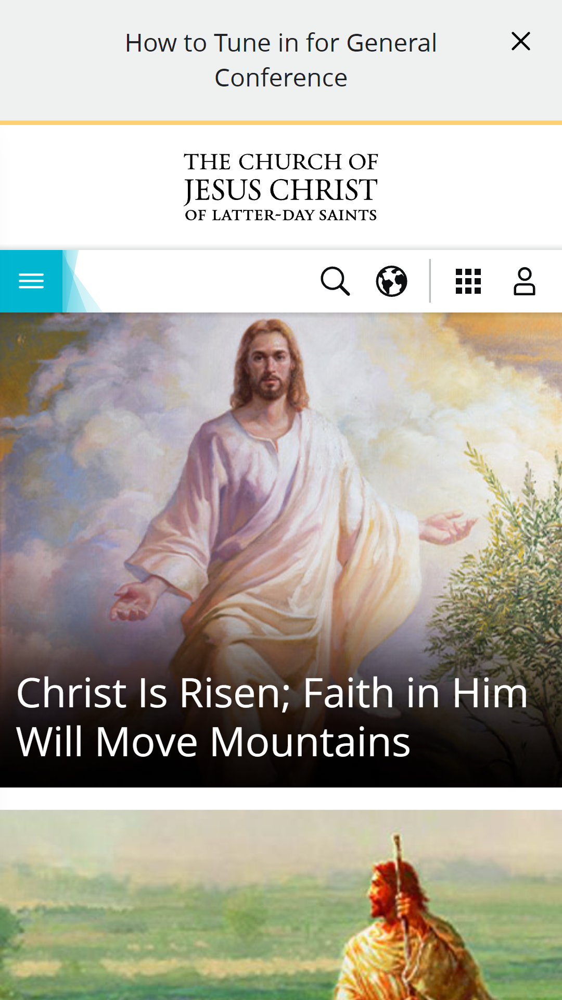

Fitt's Law
The Church of Jesus Christ of Latter Day Saints
Church of Jesus Christ I feel that this website fills the criteria of Fitt's Law because all the links are big boxes or icons that are quick and easy to tap on.
PARC: proximity
Discord
DiscordDiscord's website shows great proximity by grouping relavent text and buttons.
White space
The Church of Jesus Christ of Latter Day Saints
Church of Jesus ChristThe Church of Jesus Christ is also a great example of the use of white space to make it feel not crowded.